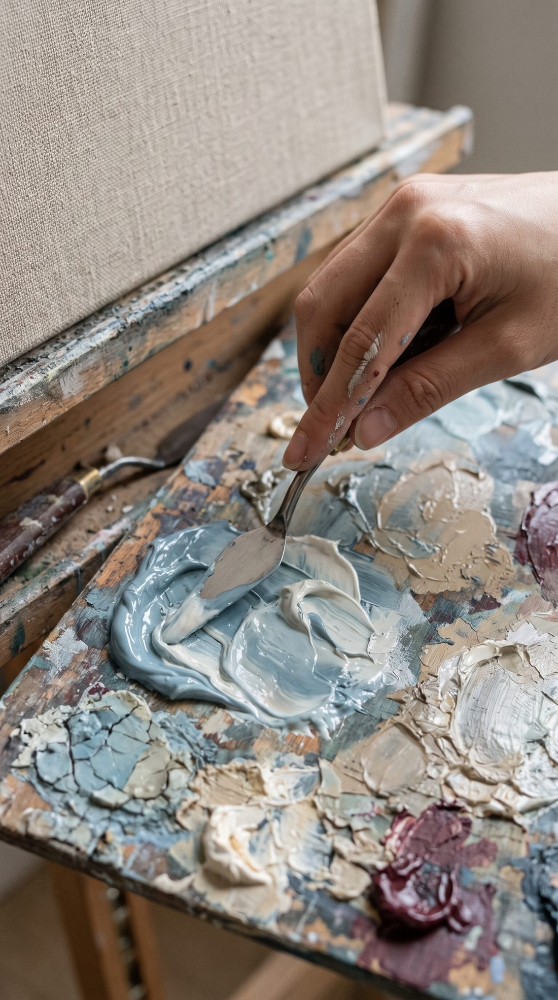

ABOUT
我是米娜。
一個數位藝術家。
我替說不清楚的感覺，找一個形狀。
我在做的事
很多人來找我的時候會說：「我想要那種感覺。」可是說不出是哪一種。
我會往裡面多看一層：那個感覺從哪裡來，它像什麼，需要什麼樣的光，才站得住。
我相信先看懂人，再設計畫面。風格不是裝飾，是一個人反覆選擇以後留下的痕跡。所以我在意的不只是好不好看，而是「這像不像那個人」。
我和 AI
對我來說，AI 不是替我畫畫的人，比較像一間暗房。
我把模糊的感覺放進去，它幫我一點一點顯影。最後留下哪一張、捨掉哪一張，還是我自己決定。
這幾年我一直在做一件事：把我說不清楚的感覺，變成 AI 也學得會的語言。
STUDIO
我的工作桌
這棟樓是從這張桌子上長出來的。

我喜歡的
- 清晨窗邊的光，和傍晚斜斜照進來的那一段
- 深夜檯燈下，只亮著一小塊的桌面
- 手寫的筆記本、一支好寫的筆、舊相機
- 霧藍、米色、黑白灰，偶爾一點深酒紅
- 畫面裡留一點空白，讓人自己走進去
也想說的
我也會卡住，也會懷疑自己。有些圖我畫了四個版本，最後留下來的不是最漂亮的那張，而是最安靜、也最像那個人的那張。
如果你也正在找自己的樣子，不用急。你反覆記住的東西，會慢慢長成你的樣子。